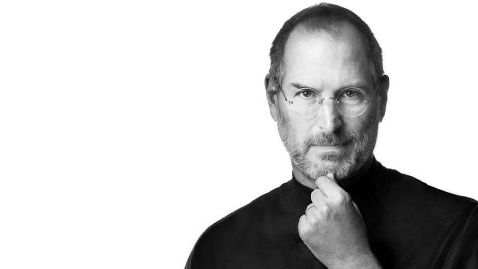

Dr. Steve Jobs

CEO of Apple
Let us look into the life of this legendary visionary, and learn something from his never-regret journey.
- 1955 - Born in 1955 to two University of Wisconsin graduate students who gave him up for adoption, Jobs was smart but directionless, dropping out of college and experimenting with different pursuits before co-founding Apple with Steve Wozniak in 1976. Jobs left the company in 1985, launching Pixar Animation Studios, then returned to Apple more than a decade later. Jobs died in 2011 following a long battle with pancreatic cancer
-
1972: College drop-out
The young Jobs graduated from his high school and joined the course at Reed College in Portland, Oregon. During the time, Jobs had no idea on what he wanted to do with his life, and he was spending all of the money his parents had saved their entire life, so he decided to drop the course after only 1 semester, mainly because he could not afford the course.
The financial difficulties didn’t stop the young man’s passion, he rolled auditing classes at Reed College. Since then, he collected and returned Coke bottles just to get himself some food money, and got his weekly free meals at the local Hare Krishna temple.obs’ first job was with Hewlett-Packard, as a summer employee. He then took a job as a technician at Atari, which was a famous video game manufacturer. He was given a job to create circuit board for the game, “Breakout”, and he collaborated with Steve Wozniak, who was later the co-founder of the Apple Company. - 1974: Jobs became a Buddhist Jobs was sparked with the interest of philosophy during his days at Reed College. At the same year he took on his first job at Atari, he traveled to Neem Karoli Baba, India with Dan Kottke. They went in search of spiritual enlightenment. He came back as a Buddhist, with his head shaved and he was wearing traditional Indian clothing.
- 1976: Apple Computer was born - Many believed Jobs was inspired by Atari’s founder Nolan Bushnell, and the inspiration got him started Apple Computer. In 1976, at the age of 21 years old, Steve Jobs founded Apple with his summer job’s co-worker at HP, Steve Wozniak, making them the first and second Apple employee. The company was later funded by an angel investor, Armas Clifford Markkula, who brought in USD $250,000.
- 1983 Marries wife of 69 years Margret Gibson. Gets laid off due to budget cuts. Inspired by Elvin Charles Stakman, he returns to school study undMany believed Jobs was inspired by Atari’s founder Nolan Bushnell, and the inspiration got him started Apple Computer. In 1976, at the age of 21 years old, Steve Jobs founded Apple with his summer job’s co-worker at HP, Steve Wozniak, making them the first and second Apple employee. The company was later funded by an angel investor, Armas Clifford Markkula, who brought in USD $250,000.er Stakman, who teaches him about breeding pest-resistent plants.
- 1986: Jobs founded Pixar An uprising year for Apple. The company hired Mike Scott from National Semiconductor to serve as CEO. Later, Jobs persuaded John Sculley, who was the CEO of Pepsi-Cola, to serve as Apple’s CEO, with a very famous question: “Do you want to sell sugar water for the rest of your life, or do you want to come with me and change the world?” Steve Jobs, John Sculley and Wozniak. (Image source: BusinessInsider.During his days, he helped the Apple to increase its sales from $800 million to $8 billion. In 1987, Sculley was Silicon Valley’s highest paid executive, withdrawing USD $2.2 million annually.
- 1984: Jobs introduced Macintosh The legend of Jobs’ innovation had just started. Jobs introduced the Macintosh to the world, and it became the first commercially successful small computer with a GUI (Graphical User Interface). The Mac’s development was later taken over by Jobs. The company went well, but the disaster was quietly planted within the heart of the founders.
- 1985: Jobs is fired from Apple A turning year for Apple and Steve Jobs. Following the internal power struggle and announcement of significant layoffs due to the pessimistic sales, Sculley took off Jobs from being the head of the Macintosh division, and later Jobs was fired by his own founded company, Apple. Nevertheless he described that the firing was the best thing happened to his life, noting that “The heaviness of being successful was replaced by the lightness of being a beginner again, less sure about everything. It freed me to enter one of the most creative periods of my life.”
- 1986: Jobs founded Pixar Jobs purchased the The Graphics Group with the price of $10 million, which is widely known as Pixar today. The company was initially producing the high-end graphic hardware, but as the business didn’t go well, the company then contracted with Disney to produce a number of computer-animated films, and the Toy Story 1 was one of its notable successes.
- 1996: Jobs re-joined Apple - Apple, being experienced a series of business and innovation ailure, bought the NeXT to bring back the Jobs to the company. Jobs was then named as the interim chief fexecutive. After the return of the Jobs, he terminated a number of projects which he thought was useless to the company’s business. It’s quite interesting to note that Apple’s employees were having fear to encounter the Jobs while riding the elevator that time, fearing that they might be the next batch to be fired by Jobs.
- 1970 - receives the Nobel Peace Prize
- 2004. He diagnosed with pancreas cancer -They said every genius does not have longer life, and it appears to be true. Jobs was diagnosed with a cancerous tumor in his pancreas, which doctor advised him to get his affairs in order, and told him that he should expect to live no longer than 3-6 months. For him, it means to say goodbye.
Jobs announced to his employees about the diagnosis result. However, he also stated that it is rare, far less aggressive type tumor. He resisted the conventional medical intervention (chemotherapy/radiation therapy) and embraced the diet method to cure the disease. It was a successful tactic, the tumor was reported to be "apparently removed".
2004 (end): Jobs’ first medical leave - After the surgery, Jobs announced in his email to Apple’s employees that he would take the entire August off to take care of his health, and expects to recover from the pancreatic cancer. He planned to return to work in September. Tim Cook (current Apple CEO), head of worldwide sales and operation at that time, took over Apple for the first time. - 2005: Jobs delivered speech at Stanford09 - Steve Jobs delivered his commencement speech to the Stanford’s graduate. The speech was split into 3 main topics, with the first topic focused on his earlier life, second topic focused on his leaving from Apple and founding of NeXT, and the currently infamous third part – the deathThe speech ended with the advice from Jobs – “Your time is limited, so don’t waste it living someone else’s life. Don’t be trapped by dogma – which is living with the results of other people’s thinking. Don’t let the noise of others’ opinions drown out your own inner voice. And most important, have the courage to follow your heart and intuition.“.
- 2007: Jobs Introduced iPhone -6 months after telling the George Bodenheimer of ESPN that the company’s new phone sucks, Jobs unveiled the plan of entering the mobile market with his new and revolutionary iDevice, named iPhone, which later not only dominated the U.S. market, but also changed the way people using the mobile phone, thus forcing mobile giants like Nokia to innovate at its best.
- 2009: Underwent liver transplant On January 14, 2009, in an internal Apple memo, Jobs wrote that in the previous week he had learned that his health-related issues are more complex than he originally thought, thus announced a six-month leave until the end of June 2009 to allow him to focus on his health. Tim Cook, who had previously acted as CEO during Jobs’ absence in 2004, became acting CEO of Apple, with Jobs still involved with "major strategic decisions." In April 2009, Jobs underwent a liver transplant at Methodist University Hospital Transplant Institute in Memphis, Tennessee. Jobs’ prognosis was "excellent". He had a liver of a young man who was around 20 years old.
- 2010: Jobs Introduced iPad Following the tremendous success of iPhone, Jobs took on the next risky step to introduce his last revolutionary product to the world – iPad. Once again Steve Jobs shocked the world by the device which can’t even be categorized into either computer or smartphone category, but its surprising success has once again proved the visionary power of the Jobs. Despite the world’s hesitation on tablet computing, Steve Jobs went with what he believed. In 2010, Apple launched their first iPad.
- 2011 (June): Jobs’ last keynote This was probably the last presentation of Steve Jobs. He announced iOS 5, the latest generation of Apple’s mobile operating system, and the cloud storage which is named as iCloud. He delegated most of the speeches to different Apple’s key employees, which pretty much hinted his falling health. In April 2009, Jobs underwent a liver transplant at Methodist University Hospital Transplant Institute in Memphis, Tennessee. Jobs’ prognosis was "excellent". He had a liver of a young man who was around 20 years old.
Steven Paul Jobs was an American inventor, designer and entrepreneur who was the co-founder, chief executive and chairman of Apple Computer. Apple's revolutionary products, which include the iPod, iPhone and iPad, are now seen as dictating the evolution of modern technology.
Technology is nothing. What's important is that you have a faith in people, that they're basically good and smart, and if you give them tools, they'll do wonderful things with them.
Stay hungry. Stay foolish.
Your time is limited, so don't waste it living someone else's life. Don't be trapped by dogma - which is living with the results of other people's thinking. Don't let the noise of others' opinions drown out your own inner voice. And most important, have the courage to follow your heart and intuition.
Steve Jobs .